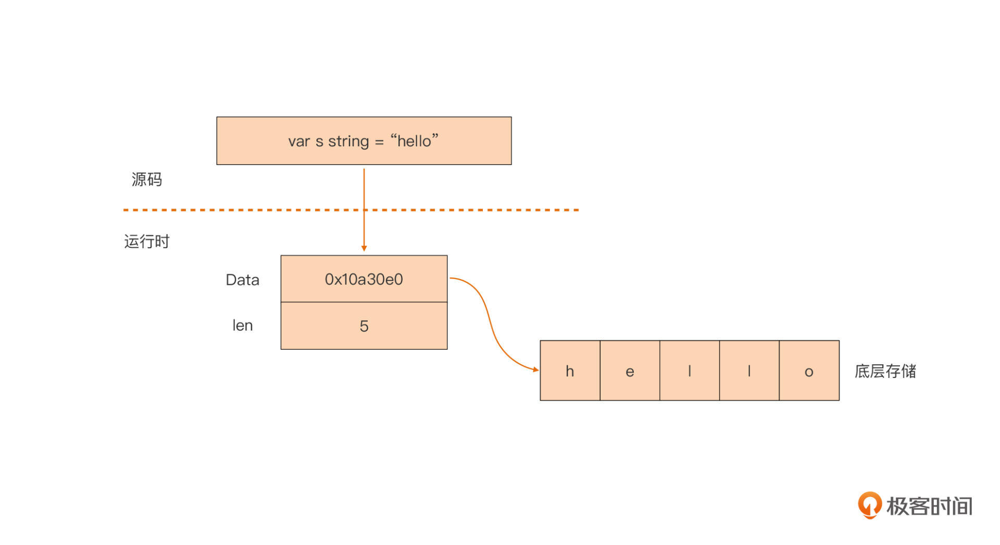

- 00 开篇词 这样入门Go，才能少走弯路.md.html
- 01 前世今生：你不得不了解的Go的历史和现状.md.html
- 02 拒绝“Hello and Bye”：Go语言的设计哲学是怎么一回事？.md.html
- 03 配好环境：选择一种最适合你的Go安装方法.md.html
- 04 初窥门径：一个Go程序的结构是怎样的？.md.html
- 05 标准先行：Go项目的布局标准是什么？.md.html
- 06 构建模式：Go是怎么解决包依赖管理问题的？.md.html
- 07 构建模式：Go Module的6类常规操作.md.html
- 08 入口函数与包初始化：搞清Go程序的执行次序.md.html
- 09 即学即练：构建一个Web服务就是这么简单.md.html
- 10 变量声明：静态语言有别于动态语言的重要特征.md.html
- 11 代码块与作用域：如何保证变量不会被遮蔽？.md.html
- 12 基本数据类型：Go原生支持的数值类型有哪些？.md.html
- 13 基本数据类型：为什么Go要原生支持字符串类型？.md.html
- 14 常量：Go在“常量”设计上的创新有哪些？.md.html
- 15 同构复合类型：从定长数组到变长切片.md.html
- 16 复合数据类型：原生map类型的实现机制是怎样的？.md.html
- 17 复合数据类型：用结构体建立对真实世界的抽象.md.html
- 18 控制结构：if的“快乐路径”原则.md.html
- 19 控制结构：Go的for循环，仅此一种.md.html
- 20 控制结构：Go中的switch语句有哪些变化？.md.html
- 21 函数：请叫我“一等公民”.md.html
- 22 函数：怎么结合多返回值进行错误处理？.md.html
- 23 函数：怎么让函数更简洁健壮？.md.html
- 24 方法：理解“方法”的本质.md.html
- 25 方法：方法集合与如何选择receiver类型？.md.html
- 26 方法：如何用类型嵌入模拟实现“继承”？.md.html
- 27 即学即练：跟踪函数调用链，理解代码更直观.md.html
- 28 接口：接口即契约.md.html
- 29 接口：为什么nil接口不等于nil？.md.html
- 30 接口：Go中最强大的魔法.md.html
- 31 并发：Go的并发方案实现方案是怎样的？.md.html
- 32 并发：聊聊Goroutine调度器的原理.md.html
- 33 并发：小channel中蕴含大智慧.md.html
- 34 并发：如何使用共享变量？.md.html
- 35 即学即练：如何实现一个轻量级线程池？.md.html
- 36 打稳根基：怎么实现一个TCP服务器？（上）.md.html
- 37 代码操练：怎么实现一个TCP服务器？（中）.md.html
- 38 成果优化：怎么实现一个TCP服务器？（下）.md.html
- 39 驯服泛型：了解类型参数.md.html
- 40 驯服泛型：定义泛型约束.md.html
- 41 驯服泛型：明确使用时机.md.html
- 元旦快乐 这是一份暂时停更的声明.md.html
- 加餐 作为Go Module的作者，你应该知道的几件事.md.html
- 加餐 如何拉取私有的Go Module？.md.html
- 加餐 我“私藏”的那些优质且权威的Go语言学习资料.md.html
- 加餐 聊聊Go 1.17版本的那些新特性.md.html
- 加餐 聊聊Go语言的指针.md.html
- 加餐 聊聊最近大热的Go泛型.md.html
- 大咖助阵 叶剑峰：Go语言中常用的那些代码优化点.md.html
- 大咖助阵 大明：Go泛型，泛了，但没有完全泛.md.html
- 大咖助阵 孔令飞：从小白到“老鸟”，我的Go语言进阶之路.md.html
- 大咖助阵 徐祥曦：从销售到分布式存储工程师，我与 Go 的故事.md.html
- 大咖助阵 曹春晖：聊聊 Go 语言的 GC 实现.md.html
- 大咖助阵 海纳：聊聊语言中的类型系统与泛型.md.html
- 期中测试 一起检验下你的学习成果吧.md.html
- 用户故事 罗杰：我的Go语言学习之路.md.html
- 结束语 和你一起迎接Go的黄金十年.md.html
- 结课测试 快来检验下你的学习成果吧！.md.html
- 捐赠
13 基本数据类型：为什么Go要原生支持字符串类型？
你好，我是Tony Bai。
在上节课中，我们讲解了在Go编程中最广泛使用的一类基本数据类型：数值类型，包括整型、浮点类型和复数类型。这一节课，我们继续来学习Go语言中另一类基本数据类型：字符串类型。
字符串类型，是现代编程语言中最常用的数据类型之一，多数主流编程语言都提供了对这个类型的原生支持，少数没有提供原生字符串的类型的主流语言（比如C语言）也通过其他形式提供了对字符串的支持。
对于这样在日常开发中高频使用的基本数据类型，我们要给予更多的关注。所以，我们这一节课，将会按照Why-What-How的逻辑，讲清楚Go对字符串类型的支持，让你对Go语言中的字符串有个完整而清晰的认识。
首先，让我们来看看为什么Go要原生支持字符串类型。
原生支持字符串有什么好处？
我们前面提过，Go是站在巨人的肩膀上成长起来的现代编程语言。它继承了前辈语言的优点，又改进了前辈语言中的不足。这其中一处就体现在Go对字符串类型的原生支持上。
这样的设计会有什么好处呢？作为对比，我们先来看看前辈语言之一的C语言对字符串的支持情况。
C语言没有提供对字符串类型的原生支持，也就是说，C语言中并没有“字符串”这个数据类型。在C语言中，字符串是以字符串字面值或以’\0’结尾的字符类型数组来呈现的，比如下面代码：
#define GO_SLOGAN "less is more"
const char * s1 = "hello, gopher"
char s2[] = "I love go"
这样定义的非原生字符串在使用过程中会有很多问题，比如：
- 不是原生类型，编译器不会对它进行类型校验，导致类型安全性差；
- 字符串操作时要时刻考虑结尾的’\0’，防止缓冲区溢出；
- 以字符数组形式定义的“字符串”，它的值是可变的，在并发场景中需要考虑同步问题；
- 获取一个字符串的长度代价较大，通常是O(n)时间复杂度；
- C语言没有内置对非ASCII字符（如中文字符）的支持。
这些问题都大大加重了开发人员在使用字符串时的心智负担。于是，Go设计者们选择了原生支持字符串类型。
在Go中，字符串类型为string。Go语言通过string类型统一了对“字符串”的抽象。这样无论是字符串常量、字符串变量或是代码中出现的字符串字面值，它们的类型都被统一设置为string，比如上面C代码换成等价的Go代码是这样的：
const (
GO_SLOGAN = "less is more" // GO_SLOGAN是string类型常量
s1 = "hello, gopher" // s1是string类型常量
)
var s2 = "I love go" // s2是string类型变量
那既然我们都说了，Go原生支持string的做法是对前辈语言的改进，这样的设计到底有哪些优秀的性质，会带来什么好处呢？
第一点：string类型的数据是不可变的，提高了字符串的并发安全性和存储利用率。
Go语言规定，字符串类型的值在它的生命周期内是不可改变的。这就是说，如果我们声明了一个字符串类型的变量，那我们是无法通过这个变量改变它对应的字符串值的，但这并不是说我们不能为一个字符串类型变量进行二次赋值。
什么意思呢？我们看看下面的代码就好理解了：
var s string = "hello"
s[0] = 'k' // 错误：字符串的内容是不可改变的
s = "gopher" // ok
在这段代码中，我们声明了一个字符串类型变量s。当我们试图通过下标方式把这个字符串的第一个字符由h改为k的时候，我们会收到编译器错误的提示：字符串是不可变的。但我们仍可以像最后一行代码那样，为变量s重新赋值为另外一个字符串。
Go这样的“字符串类型数据不可变”的性质给开发人员带来的最大好处，就是我们不用再担心字符串的并发安全问题。这样，Go字符串可以被多个Goroutine（Go语言的轻量级用户线程，后面我们会详细讲解）共享，开发者不用因为担心并发安全问题，使用会带来一定开销的同步机制。
另外，也由于字符串的不可变性，针对同一个字符串值，无论它在程序的几个位置被使用，Go编译器只需要为它分配一块存储就好了，大大提高了存储利用率。
第二点：没有结尾’\0’，而且获取长度的时间复杂度是常数时间，消除了获取字符串长度的开销。
在C语言中，获取一个字符串的长度可以调用标准库的strlen函数，这个函数的实现原理是遍历字符串中的每个字符并做计数，直到遇到字符串的结尾’\0’停止。显然这是一个线性时间复杂度的算法，执行时间与字符串中字符个数成正比。并且，它存在一个约束，那就是传入的字符串必须有结尾’\0’，结尾’\0’是字符串的结束标志。如果你使用过C语言，想必你也吃过字符串结尾’\0’的亏。
Go语言修正了这个缺陷，Go字符串中没有结尾’\0’，获取字符串长度更不需要结尾’\0’作为结束标志。并且，Go获取字符串长度是一个常数级时间复杂度，无论字符串中字符个数有多少，我们都可以快速得到字符串的长度值。至于这方面的原理，我们等会再详细说明。
第三点：原生支持“所见即所得”的原始字符串，大大降低构造多行字符串时的心智负担。
如果我们要在C语言中构造多行字符串，一般就是两个方法：要么使用多个字符串的自然拼接，要么需要结合续行符”“。但因为有转义字符的存在，我们很难控制好格式。Go语言就简单多了，通过一对反引号原生支持构造“所见即所得”的原始字符串（Raw String）。而且，Go语言原始字符串中的任意转义字符都不会起到转义的作用。比如下面这段代码：
var s string = ` ,_---~~~~~----._
_,,_,*^____ _____*g*\"*,--,
/ __/ /' ^. / \ ^@q f
[ @f | @)) | | @)) l 0 _/
\/ \~____ / __ \_____/ \
| _l__l_ I
} [______] I
] | | | |
] ~ ~ |
| |
| |`
fmt.Println(s)
你可以看到，字符串变量s被赋值了一个由一对反引号包裹的Gopher图案。这个Gopher图案由诸多ASCII字符组成，其中就包括了转义字符。这个时候，如果我们通过Println函数输出这个字符串，得到的图案和上面的图案并无二致。
第四点：对非ASCII字符提供原生支持，消除了源码在不同环境下显示乱码的可能。
Go语言源文件默认采用的是Unicode字符集，Unicode字符集是目前市面上最流行的字符集，它囊括了几乎所有主流非ASCII字符（包括中文字符）。Go字符串中的每个字符都是一个Unicode字符，并且这些Unicode字符是以UTF-8编码格式存储在内存当中的。在接下来讲解Go字符串的组成时，我们还会对这部分内容做进一步讲解。
知道了Go原生支持字符串类型带来的诸多变化和好处后，我们接下来就要深入到Go字符串的机制里看看，看看Go字符串是由什么组成的。
Go字符串的组成
Go语言在看待Go字符串组成这个问题上，有两种视角。一种是字节视角，也就是和所有其它支持字符串的主流语言一样，Go语言中的字符串值也是一个可空的字节序列，字节序列中的字节个数称为该字符串的长度。一个个的字节只是孤立数据，不表意。
比如在下面代码中，我们输出了字符串中的每个字节，以及整个字符串的长度：
var s = "中国人"
fmt.Printf("the length of s = %d\n", len(s)) // 9
for i := 0; i < len(s); i++ {
fmt.Printf("0x%x ", s[i]) // 0xe4 0xb8 0xad 0xe5 0x9b 0xbd 0xe4 0xba 0xba
}
fmt.Printf("\n")
我们看到，由“中国人”构成的字符串的字节序列长度为9。并且，仅从某一个输出的字节来看，它是不能与字符串中的任一个字符对应起来的。
如果要表意，我们就需要从字符串的另外一个视角来看，也就是字符串是由一个可空的字符序列构成。这个时候我们再看下面代码：
var s = "中国人"
fmt.Println("the character count in s is", utf8.RuneCountInString(s)) // 3
for _, c := range s {
fmt.Printf("0x%x ", c) // 0x4e2d 0x56fd 0x4eba
}
fmt.Printf("\n")
在这段代码中，我们输出了字符串中的字符数量，也输出了这个字符串中的每个字符。前面说过，Go采用的是Unicode字符集，每个字符都是一个Unicode字符，那么这里输出的0x4e2d、0x56fd和0x4eba就应该是某种Unicode字符的表示了。没错，以0x4e2d为例，它是汉字“中”在Unicode字符集表中的码点（Code Point）。
那么，什么是Unicode码点呢？
Unicode字符集中的每个字符，都被分配了统一且唯一的字符编号。所谓Unicode码点，就是指将Unicode字符集中的所有字符“排成一队”，字符在这个“队伍”中的位次，就是它在Unicode字符集中的码点。也就说，一个码点唯一对应一个字符。“码点”的概念和我们马上要讲的rune类型有很大关系。
rune类型与字符字面值
Go使用rune这个类型来表示一个Unicode码点。rune本质上是int32类型的别名类型，它与int32类型是完全等价的，在Go源码中我们可以看到它的定义是这样的：
// $GOROOT/src/builtin.go
type rune = int32
由于一个Unicode码点唯一对应一个Unicode字符。所以我们可以说，一个rune实例就是一个Unicode字符，一个Go字符串也可以被视为rune实例的集合。我们可以通过字符字面值来初始化一个rune变量。
在Go中，字符字面值有多种表示法，最常见的是通过单引号括起的字符字面值，比如：
'a' // ASCII字符
'中' // Unicode字符集中的中文字符
'\n' // 换行字符
'\'' // 单引号字符
我们还可以使用Unicode专用的转义字符\u或\U作为前缀，来表示一个Unicode字符，比如：
'\u4e2d' // 字符：中
'\U00004e2d' // 字符：中
'\u0027' // 单引号字符
这里，我们要注意，\u后面接四个十六进制数。如果是用四个十六进制数无法表示的Unicode字符，我们可以使用\U，\U后面可以接八个十六进制数来表示一个Unicode字符。
而且，由于表示码点的rune本质上就是一个整型数，所以我们还可用整型值来直接作为字符字面值给rune变量赋值，比如下面代码：
'\x27' // 使用十六进制表示的单引号字符
'\047' // 使用八进制表示的单引号字符
字符串字面值
字符串是字符的集合，了解了字符字面值后，字符串的字面值也就很简单了。只不过字符串是多个字符，所以我们需要把表示单个字符的单引号，换为表示多个字符组成的字符串的双引号就可以了。我们可以看下面这些例子：
"abc\n"
"中国人"
"\u4e2d\u56fd\u4eba" // 中国人
"\U00004e2d\U000056fd\U00004eba" // 中国人
"中\u56fd\u4eba" // 中国人，不同字符字面值形式混合在一起
"\xe4\xb8\xad\xe5\x9b\xbd\xe4\xba\xba" // 十六进制表示的字符串字面值：中国人
我们看到，将单个Unicode字符字面值一个接一个地连在一起，并用双引号包裹起来就构成了字符串字面值。甚至，我们也可以像倒数第二行那样，将不同字符字面值形式混合在一起，构成一个字符串字面值。
不过，这里你可能发现了一个问题，上面示例代码的最后一行使用的是十六进制形式的字符串字面值，但每个字节的值与前面几行的码点值完全对应不上啊，这是为什么呢？
这个字节序列实际上是“中国人”这个Unicode字符串的UTF-8编码值。什么是UTF-8编码？它又与Unicode字符集有什么关系呢？
UTF-8编码方案
UTF-8编码解决的是Unicode码点值在计算机中如何存储和表示（位模式）的问题。那你可能会说，码点唯一确定一个Unicode字符，直接用码点值不行么？
这的确是可以的，并且UTF-32编码标准就是采用的这个方案。UTF-32编码方案固定使用4个字节表示每个Unicode字符码点，这带来的好处就是编解码简单，但缺点也很明显，主要有下面几点：
- 这种编码方案使用4个字节存储和传输一个整型数的时候，需要考虑不同平台的字节序问题;
- 由于采用4字节的固定长度编码，与采用1字节编码的ASCII字符集无法兼容；
- 所有Unicode字符码点都用4字节编码，显然空间利用率很差。
针对这些问题，Go语言之父Rob Pike发明了UTF-8编码方案。和UTF-32方案不同，UTF-8方案使用变长度字节，对Unicode字符的码点进行编码。编码采用的字节数量与Unicode字符在码点表中的序号有关：表示序号（码点）小的字符使用的字节数量少，表示序号（码点）大的字符使用的字节数多。
UTF-8编码使用的字节数量从1个到4个不等。前128个与ASCII字符重合的码点（U+0000~U+007F）使用1个字节表示；带变音符号的拉丁文、希腊文、西里尔字母、阿拉伯文等使用2个字节来表示；而东亚文字（包括汉字）使用3个字节表示；其他极少使用的语言的字符则使用4个字节表示。
这样的编码方案是兼容ASCII字符内存表示的，这意味着采用UTF-8方案在内存中表示Unicode字符时，已有的ASCII字符可以被直接当成Unicode字符进行存储和传输，不用再做任何改变。
此外，UTF-8的编码单元为一个字节（也就是一次编解码一个字节），所以我们在处理UTF-8方案表示的Unicode字符的时候，就不需要像UTF-32方案那样考虑字节序问题了。相对于UTF-32方案，UTF-8方案的空间利用率也是最高的。
现在，UTF-8编码方案已经成为Unicode字符编码方案的事实标准，各个平台、浏览器等默认均使用UTF-8编码方案对Unicode字符进行编、解码。Go语言也不例外，采用了UTF-8编码方案存储Unicode字符，我们在前面按字节输出一个字符串值时看到的字节序列，就是对字符进行UTF-8编码后的值。
那么现在我们就使用Go在标准库中提供的UTF-8包，对Unicode字符（rune）进行编解码试试看：
// rune -> []byte
func encodeRune() {
var r rune = 0x4E2D
fmt.Printf("the unicode charactor is %c\n", r) // 中
buf := make([]byte, 3)
_ = utf8.EncodeRune(buf, r) // 对rune进行utf-8编码
fmt.Printf("utf-8 representation is 0x%X\n", buf) // 0xE4B8AD
}
// []byte -> rune
func decodeRune() {
var buf = []byte{0xE4, 0xB8, 0xAD}
r, _ := utf8.DecodeRune(buf) // 对buf进行utf-8解码
fmt.Printf("the unicode charactor after decoding [0xE4, 0xB8, 0xAD] is %s\n", string(r)) // 中
}
这段代码中，encodeRune通过调用UTF-8的EncodeRune函数实现了对一个rune，也就是一个Unicode字符的编码，decodeRune则调用UTF-8包的decodeRune，将一段内存字节转换回一个Unicode字符。
好了，现在我们已经搞清楚Go语言中字符串类型的性质和组成了。有了这些基础之后，我们就可以看看Go是如何实现字符串类型的。也就是说，在Go的编译器和运行时中，一个字符串变量究竟是如何表示的？
Go字符串类型的内部表示
其实，我们前面提到的Go字符串类型的这些优秀的性质，Go字符串在编译器和运行时中的内部表示是分不开的。Go字符串类型的内部表示究竟是什么样的呢？在标准库的reflect包中，我们找到了答案，你可以看看下面代码：
// $GOROOT/src/reflect/value.go
// StringHeader是一个string的运行时表示
type StringHeader struct {
Data uintptr
Len int
}
我们可以看到，string类型其实是一个“描述符”，它本身并不真正存储字符串数据，而仅是由一个指向底层存储的指针和字符串的长度字段组成的。我也画了一张图，直观地展示了一个string类型变量在Go内存中的存储：

你看，Go编译器把源码中的string类型映射为运行时的一个二元组（Data, Len），真实的字符串值数据就存储在一个被Data指向的底层数组中。通过Data字段，我们可以得到这个数组的内容，你可以看看下面这段代码：
func dumpBytesArray(arr []byte) {
fmt.Printf("[")
for _, b := range arr {
fmt.Printf("%c ", b)
}
fmt.Printf("]\n")
}
func main() {
var s = "hello"
hdr := (*reflect.StringHeader)(unsafe.Pointer(&s)) // 将string类型变量地址显式转型为reflect.StringHeader
fmt.Printf("0x%x\n", hdr.Data) // 0x10a30e0
p := (*[5]byte)(unsafe.Pointer(hdr.Data)) // 获取Data字段所指向的数组的指针
dumpBytesArray((*p)[:]) // [h e l l o ] // 输出底层数组的内容
}
这段代码利用了unsafe.Pointer的通用指针转型能力，按照StringHeader给出的结构内存布局，“顺藤摸瓜”，一步步找到了底层数组的地址，并输出了底层数组内容。
知道了string类型的实现原理后，我们再回头看看Go字符串类型性质中“获取长度的时间复杂度是常数时间”那句，是不是就很好理解了？之所以是常数时间，那是因为字符串类型中包含了字符串长度信息，当我们用len函数获取字符串长度时，len函数只要简单地将这个信息提取出来就可以了。
了解了string类型的实现原理后，我们还可以得到这样一个结论，那就是我们直接将string类型通过函数/方法参数传入也不会带来太多的开销。因为传入的仅仅是一个“描述符”，而不是真正的字符串数据。
那么，了解了Go字符串的一些基本信息和原理后，我们从理论转向实际，看看日常开发中围绕字符串类型都有哪些常见操作。
Go字符串类型的常见操作
由于字符串的不可变性，针对字符串，我们更多是尝试对其进行读取，或者将它作为一个组成单元去构建其他字符串，又或是转换为其他类型。下面我们逐一来看一下这些字符串操作：
第一个操作：下标操作。
在字符串的实现中，真正存储数据的是底层的数组。字符串的下标操作本质上等价于底层数组的下标操作。我们在前面的代码中实际碰到过针对字符串的下标操作，形式是这样的：
var s = "中国人"
fmt.Printf("0x%x\n", s[0]) // 0xe4：字符“中” utf-8编码的第一个字节
我们可以看到，通过下标操作，我们获取的是字符串中特定下标上的字节，而不是字符。
第二个操作：字符迭代。
Go有两种迭代形式：常规for迭代与for range迭代。你要注意，通过这两种形式的迭代对字符串进行操作得到的结果是不同的。
通过常规for迭代对字符串进行的操作是一种字节视角的迭代，每轮迭代得到的的结果都是组成字符串内容的一个字节，以及该字节所在的下标值，这也等价于对字符串底层数组的迭代，比如下面代码：
var s = "中国人"
for i := 0; i < len(s); i++ {
fmt.Printf("index: %d, value: 0x%x\n", i, s[i])
}
运行这段代码，我们会看到，经过常规for迭代后，我们获取到的是字符串里字符的UTF-8编码中的一个字节：
index: 0, value: 0xe4
index: 1, value: 0xb8
index: 2, value: 0xad
index: 3, value: 0xe5
index: 4, value: 0x9b
index: 5, value: 0xbd
index: 6, value: 0xe4
index: 7, value: 0xba
index: 8, value: 0xba
而像下面这样使用for range迭代，我们得到的又是什么呢？我们继续看代码：
var s = "中国人"
for i, v := range s {
fmt.Printf("index: %d, value: 0x%x\n", i, v)
}
同样运行一下这段代码，我们得到：
index: 0, value: 0x4e2d
index: 3, value: 0x56fd
index: 6, value: 0x4eba
我们看到，通过for range迭代，我们每轮迭代得到的是字符串中Unicode字符的码点值，以及该字符在字符串中的偏移值。我们可以通过这样的迭代，获取字符串中的字符个数，而通过Go提供的内置函数len，我们只能获取字符串内容的长度（字节个数）。当然了，获取字符串中字符个数更专业的方法，是调用标准库UTF-8包中的RuneCountInString函数，这点你可以自己试一下。
第三个操作：字符串连接。
我们前面已经知道，字符串内容是不可变的，但这并不妨碍我们基于已有字符串创建新字符串。Go原生支持通过+/+=操作符进行字符串连接，这也是对开发者体验最好的字符串连接操作，你可以看看下面这段代码：
s := "Rob Pike, "
s = s + "Robert Griesemer, "
s += " Ken Thompson"
fmt.Println(s) // Rob Pike, Robert Griesemer, Ken Thompson
不过，虽然通过+/+=进行字符串连接的开发体验是最好的，但连接性能就未必是最快的了。除了这个方法外，Go还提供了strings.Builder、strings.Join、fmt.Sprintf等函数来进行字符串连接操作。关于这些方法的性能讨论，我放到了后面的思考题里，我想让你先去找一下答案。
第四个操作：字符串比较。
Go字符串类型支持各种比较关系操作符，包括= =、!= 、>=、<=、> 和 <。在字符串的比较上，Go采用字典序的比较策略，分别从每个字符串的起始处，开始逐个字节地对两个字符串类型变量进行比较。
当两个字符串之间出现了第一个不相同的元素，比较就结束了，这两个元素的比较结果就会做为串最终的比较结果。如果出现两个字符串长度不同的情况，长度比较小的字符串会用空元素补齐，空元素比其他非空元素都小。
这里我给了一个Go字符串比较的示例：
func main() {
// ==
s1 := "世界和平"
s2 := "世界" + "和平"
fmt.Println(s1 == s2) // true
// !=
s1 = "Go"
s2 = "C"
fmt.Println(s1 != s2) // true
// < and <=
s1 = "12345"
s2 = "23456"
fmt.Println(s1 < s2) // true
fmt.Println(s1 <= s2) // true
// > and >=
s1 = "12345"
s2 = "123"
fmt.Println(s1 > s2) // true
fmt.Println(s1 >= s2) // true
}
你可以看到，鉴于Go string类型是不可变的，所以说如果两个字符串的长度不相同，那么我们不需要比较具体字符串数据，也可以断定两个字符串是不同的。但是如果两个字符串长度相同，就要进一步判断，数据指针是否指向同一块底层存储数据。如果还相同，那么我们可以说两个字符串是等价的，如果不同，那就还需要进一步去比对实际的数据内容。
第五个操作：字符串转换。
在这方面，Go支持字符串与字节切片、字符串与rune切片的双向转换，并且这种转换无需调用任何函数，只需使用显式类型转换就可以了。我们看看下面代码：
var s string = "中国人"
// string -> []rune
rs := []rune(s)
fmt.Printf("%x\n", rs) // [4e2d 56fd 4eba]
// string -> []byte
bs := []byte(s)
fmt.Printf("%x\n", bs) // e4b8ade59bbde4baba
// []rune -> string
s1 := string(rs)
fmt.Println(s1) // 中国人
// []byte -> string
s2 := string(bs)
fmt.Println(s2) // 中国人
这样的转型看似简单，但无论是string转切片，还是切片转string，这类转型背后也是有着一定开销的。这些开销的根源就在于string是不可变的，运行时要为转换后的类型分配新内存。
小结
好了，今天的课讲到这里就结束了。这一节课，我们学习了Go中另外一类最常用的基本数据类型：字符串类型。Go原生支持字符串类型，所有字符串变量、常量、字面值都统一设置为string类型，对string的原生支持使得Go字符串有了很多优秀性质。
我们可以使用两个视角来看待Go字符串的组成，一种是字节视角。Go字符串是由一个可空的字节序列组成，字节的个数称为字符串的长度；另外一种是字符视角。Go字符串是由一个可空的字符序列构成。Go字符串中的每个字符都是一个Unicode字符。
Go使用rune类型来表示一个Unicode字符的码点。为了传输和存储Unicode字符，Go还使用了UTF-8编码方案，UTF-8编码方案使用变长字节的编码方式，码点小的字符用较少的字节编码，码点大的字符用较多字节编码，这种编码方式兼容ASCII字符集，并且拥有很高的空间利用率。
Go语言在运行时层面通过一个二元组结构（Data, Len）来表示一个string类型变量，其中Data是一个指向存储字符串数据内容区域的指针值，Len是字符串的长度。因此，本质上，一个string变量仅仅是一个“描述符”，并不真正包含字符串数据。因此，我们即便直接将string类型变量作为函数参数，其传递的开销也是恒定的，不会随着字符串大小的变化而变化。
Go为其原生支持的string类型提供了许多原生操作类型，在进行字符串操作时你要注意以下几点：
- 通过常规for迭代与for range迭代所得到的结果不同，常规for迭代采用的是字节视角；而for range迭代采用的是字符视角；
- 基于+/+=操作符的字符串连接是对开发者体验最好的字符串连接方式，但却不是性能最好的方式；
- 无论是字符串转切片，还是切片转字符串，都会有内存分配的开销，这缘于Go字符串数据内容不可变的性质。
思考题
我们前面讲到，Go提供多种字符串连接服务，包括基于+/+=的字符连接、基于strings.Builder、strings.Join、fmt.Sprintf等函数来进行字符串连接操作。那么，哪种连接方式是性能最高的呢？期待在留言区看到你的想法。
欢迎把这节课分享给更多对Go语言字符串类型感兴趣的朋友。我是Tony Bai，我们下节课见。
© 2019 - 2023 Liangliang Lee. Powered by gin and hexo-theme-book.